Unofficial study solution; not an official GTU answer key. Answers have not been independently verified. English text reflows; source equations, diagrams and Gujarati retain their original appearance. Use Enlarge image to inspect them.
આ બિનસત્તાવાર અભ્યાસ ઉકેલ છે, સત્તાવાર GTU જવાબવહી નથી. PDF માંથી ગુજરાતી લખાણ સાચું નીકળતું નથી, તેથી દરેક જવાબ મૂળ ચિત્રરૂપે જાળવ્યો છે. વાંચવા માટે ચિત્ર મોટું કરો. મૂળ પ્રશ્ન અને પરીક્ષાના વિકલ્પોની સૂચનાઓ અનુસરો.
Coverage: all five questions and every printed OR alternative are solved: 28 parts. The authentic English question is retained in both language views; answers are in English and Gujarati.
Printed instructions: attempt all questions; make suitable assumptions; figures on the right indicate full marks; simple and non-programmable scientific calculators are permitted; the English version is authentic.
Assumptions: derivations specify fluid, geometry and pressure conventions. Any numerical examples not printed in the paper are explicitly illustrative. Diagrams are schematic.
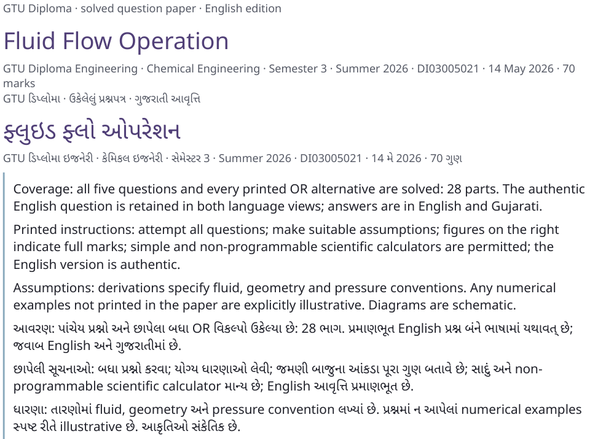
Question 1
Q1 · Fluidization, compressibility and flow regimes
Q.1 (a) · Discuss about Minimum fluidization velocity. · 3 marks
Minimum fluidization velocity umf is the superficial upward fluid velocity at which a settled particle bed just begins to become fluidized.

Δpbed,mf A = (ρp − ρf) (1 − εmf) A Lmf g
• Superficial velocity uses the empty-column cross-sectional area A, not the pore area.
• At incipient fluidization the bed pressure force balances the buoyant weight of particles. The relation excludes distributor pressure drop and wall support.
• Particle size, shape and density, fluid density and viscosity affect umf; for example fluid catalytic cracking uses a fluidized catalyst bed.
εmf is the bed void fraction and Lmf the bed height at onset. The relation assumes a uniform bed and negligible particle entrainment.

Q.1 (b) · Differentiate Compressible and incompressible fluids. · 4 marks
Compressibility describes how much density changes when pressure changes.

All real fluids are compressible to some degree. A gas may be modelled as incompressible at low speed and small pressure change; a liquid can be compressible in water hammer.
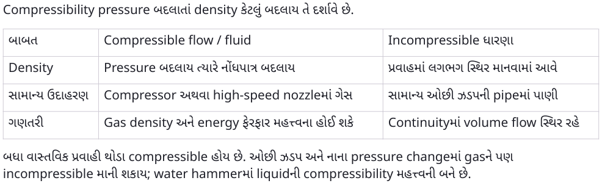
Q.1 (c) · Explain Reynold’s experiment with neat sketch. · 7 marks
Reynolds’ experiment visualises the transition from orderly to mixed flow in a pipe using a thin dye streak.

A constant-head tank supplies a glass tube; a fine dye jet enters along the tube axis.
Apparatus and observations
1. A constant-head water tank feeds a transparent straight pipe; a valve controls flow. A small dye reservoir injects dye gently near the tube entrance.
2. At low flow the dye remains a nearly straight streak: laminar layers move with little transverse mixing.
3. Increase the valve opening: the streak becomes unsteady in transition, then spreads across the tube in turbulent flow.

ρ is fluid density, V is average pipe velocity, D is internal diameter and μ is dynamic viscosity. In ordinary pipe flow, Re below about 2300 is normally laminar, 2300–4000 is transitional, and above about 4000 is usually turbulent. The exact onset depends on disturbance and inlet conditions.
Illustrative Reynolds number
ρ = 1000 kg m⁻³; V = 0.10 m s⁻¹
D = 0.020 m; μ = 0.001 Pa s
Re = 2000 (dimensionless)
This is on the normally laminar side of the guideline; the dye observation and inlet disturbances also matter. The dye marks mixing, not an exact velocity profile.
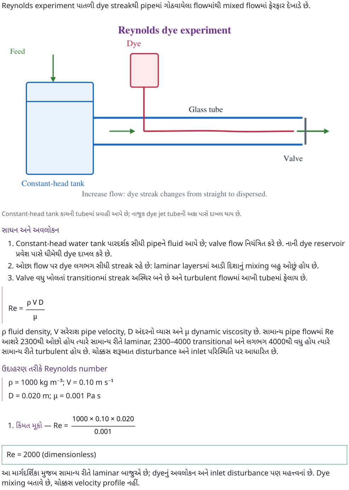
Q.1 (c) · Derive Bernoulli’s equation. · OR · 7 marks
Bernoulli’s equation expresses mechanical-energy conservation along a streamline: pressure, velocity and elevation head can exchange.

Sections 1 and 2 are on a streamline; elevations use the same datum.
Assumptions
• Steady flow of constant-density incompressible fluid; inviscid along the streamline; gravity is the only body force.
• No pump, turbine or heat-driven mechanical-energy addition between the sections. p is static pressure and V local speed; use a consistent pressure reference.
Derivation
1. Force balance on a fluid element along the streamline — dp + ρ V dV + ρ g dz = 0

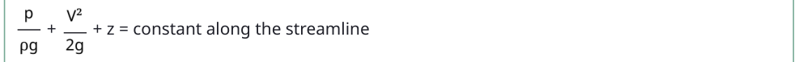
Illustrative head at one section
Water: ρ = 1000 kg m⁻³, g = 9.81 m s⁻²
p = 98,100 Pa; V = 1.4 m s⁻¹; z = 2.0 m


3. Add heads — 10.00 m + 0.10 m + 2.00 m = 12.10 m
Total head ≈ 12.10 m
The units are metres of the flowing liquid. Real pipe systems require loss and pump/turbine terms; using section-average velocity may require kinetic-energy correction factors.

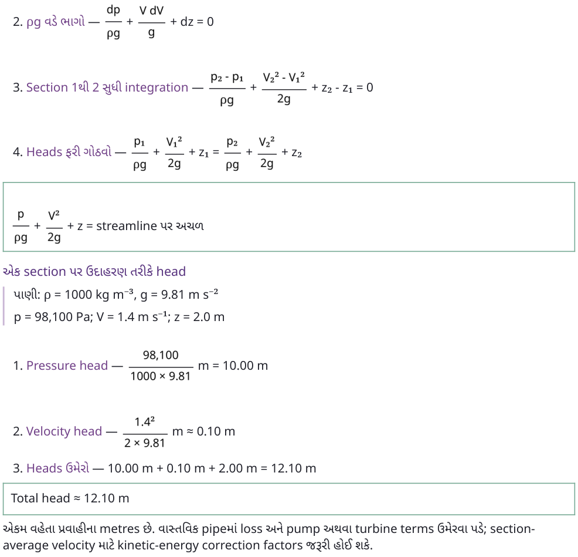
Question 2
Q2 · Drag, fluids, pumps and continuity
Q.2 (a) · Define Drag and drag coefficient. · 3 marks
Drag FD is the force a fluid exerts on a body opposite to the relative motion. It includes pressure drag and viscous drag.
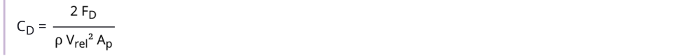
• CD is dimensionless; ρ is fluid density, Vrel relative speed and Ap the specified projected area normal to the flow.
• CD depends on Reynolds number, body shape and orientation; it is undefined at zero relative speed.
• Example: drag opposes a solid sphere settling through a liquid.
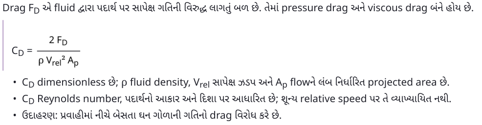
Q.2 (b) · Differentiate Ideal fluid and Real fluid. · 4 marks
An ideal fluid is a simplifying model with zero viscosity; a real fluid has viscosity.
![Q.2 (b): preserved source formula, table or diagram, page 10. Extracted text context (formula notation may be incomplete): Feature Ideal fluid Real fluid Viscosity and shear Zero viscosity; no viscous shear Nonzero viscosity; shear stress under deformation Pipe loss No viscous friction loss in the ideal model Friction dissipates mechanical energy Wall Inviscid model need not enforce no- slip Ordinary liquids and gases obey no-slip at a stationary solid wall Example Hypothetical approximation away from boundary layers Water, oil and air](summer-2026.assets/0020.webp)
The inviscid model is useful where viscous effects are small, but it cannot predict real pipe pressure losses. Incompressibility is a separate assumption.
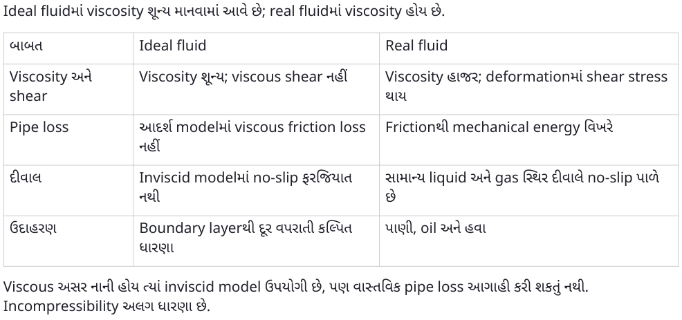
Q.2 (c) · Describe Construction and working of centrifugal Pump with neat sketch. · 7 marks
A centrifugal pump is a rotodynamic pump: a rotating impeller gives liquid energy, and the casing converts part of its velocity head into pressure head.

Schematic end view; suction enters axially at the eye and discharge leaves the volute.
Construction — part and purpose
1. An impeller with blades rotates on a shaft inside a close-fitting casing; the eye is the central suction opening.
2. A volute casing collects liquid from the impeller and its generally widening passage helps recover pressure.
3. A suction pipe brings liquid to the eye; a discharge pipe carries it away. Bearings, shaft seal and motor support and drive the rotor. A foot valve and strainer may be fitted on suction.
Working — step and reason
1. Prime the casing and suction line with liquid before starting a conventional non-self-priming pump.
2. Rotation moves liquid from the eye toward the periphery, increasing its velocity and lowering pressure at the eye.
3. Pressure at the liquid source pushes replacement liquid into the eye; the volute slows the discharge and recovers part of its pressure.
4. The continuous discharge supplies the pipeline. Set the operating point from the pump and system curves.
Illustrative hydraulic power (not given in the paper)
Water: ρ = 1000 kg m⁻³; g = 9.81 m s⁻²
Q = 0.010 m³ s⁻¹; pump head H = 10 m
1. Formula — Phyd = ρgQH
2. Substitute — Phyd = 1000 × 9.81 × 0.010 × 10 W
Phyd = 981 W
This is liquid hydraulic power, not motor input; input is larger when efficiency is below 100%. Used for water transfer and circulation. Ensure adequate NPSH and avoid dry running or prolonged shutoff.

Q.2 (a) · Discuss about Cavitation in centrifugal pump. · OR · 3 marks
Cavitation occurs when local absolute liquid pressure falls to or below its vapour pressure and vapour bubbles form; they collapse when carried into a higher-pressure region.
• Collapse causes noise, vibration, pitting of impeller surfaces and loss of head or efficiency.
• Prevention: Maintain adequate available NPSH above the pump’s required NPSH with a suitable margin; raise the liquid level or inlet pressure, shorten and enlarge the suction line, remove blockages, reduce liquid temperature or pump speed.
Example: a hot liquid in a restricted suction line may cavitate at the impeller eye.
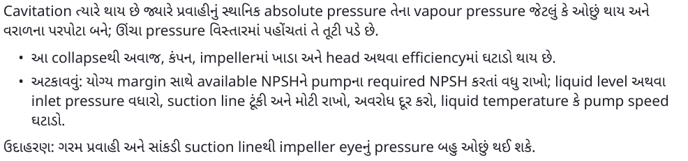
Q.2 (b) · Derive Continuity equation for mass balance in steady flow. · OR · 4 marks
Continuity is conservation of mass: the mass entering a steady-flow control volume equals the mass leaving it.
Assume one inlet and one outlet, steady flow, no leaks or mass accumulation. V denotes cross- section mean velocity and ρ is uniform at each section.
Derivation
1. Mass per unit time through a section — ṁ = ρ A V
2. Mass balance — ṁin − ṁout = 0
3. Substitute section values — ρ₁ A₁ V₁ = ρ₂ A₂ V₂
ρ₁ A₁ V₁ = ρ₂ A₂ V₂
For constant density, cancel ρ to obtain: Q = A₁ V₁ = A₂ V₂. For compressible flow the full density terms must remain.
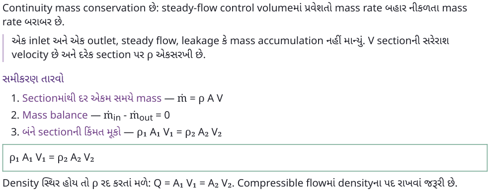
Q.2 (c) · Describe Construction and working of reciprocating Pump with neat sketch. · OR · 7 marks
A reciprocating pump is a positive-displacement pump in which a piston alternately enlarges and reduces a liquid-filled cylinder.
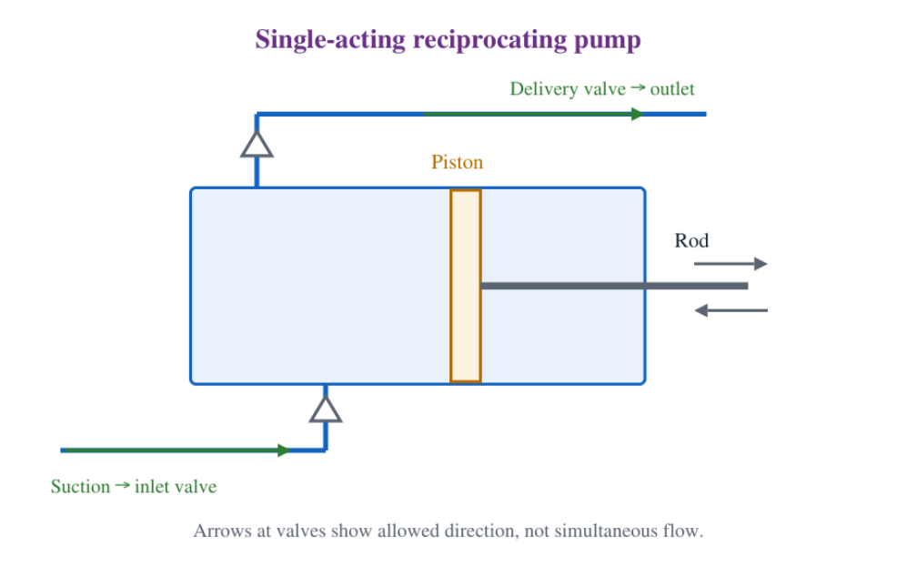
Single-acting cylinder: only one side of the piston performs the pumping strokes.
Construction — part and purpose
1. A cylinder contains a close-fitting piston and packing; a piston rod, connecting rod and crank convert rotation into back-and-forth motion.
2. A suction pipe and one-way suction valve admit liquid from the source; a delivery valve and delivery pipe permit flow to the system.
3. A motor drives the crank. A relief valve is normally fitted on the discharge for overpressure protection.
Working — step and reason
1. On the suction stroke the piston moves away from the valve end, increasing cylinder volume and lowering pressure; the suction valve opens and delivery valve closes.
2. On the delivery stroke the piston moves toward the valve end, increasing cylinder pressure; the suction valve closes and the delivery valve opens.
3. Each revolution produces one suction and one delivery stroke in this single-acting arrangement. Actual flow pulsates; an air vessel can reduce pulsation.
Illustrative theoretical delivery
Piston area A = 0.002 m²; stroke length L = 0.20 m
n = 2 delivery strokes s⁻¹; assume no leakage
1. Formula — Qth = A L n
2. Substitute — Qth = 0.002 × 0.20 × 2 m³ s⁻¹
Qth = 0.0008 m³ s⁻¹
Actual average delivery can be lower because of slip and leakage. Such pumps can supply small flows at high head; never close the discharge without a relief path. Suction lift remains limited by cavitation.
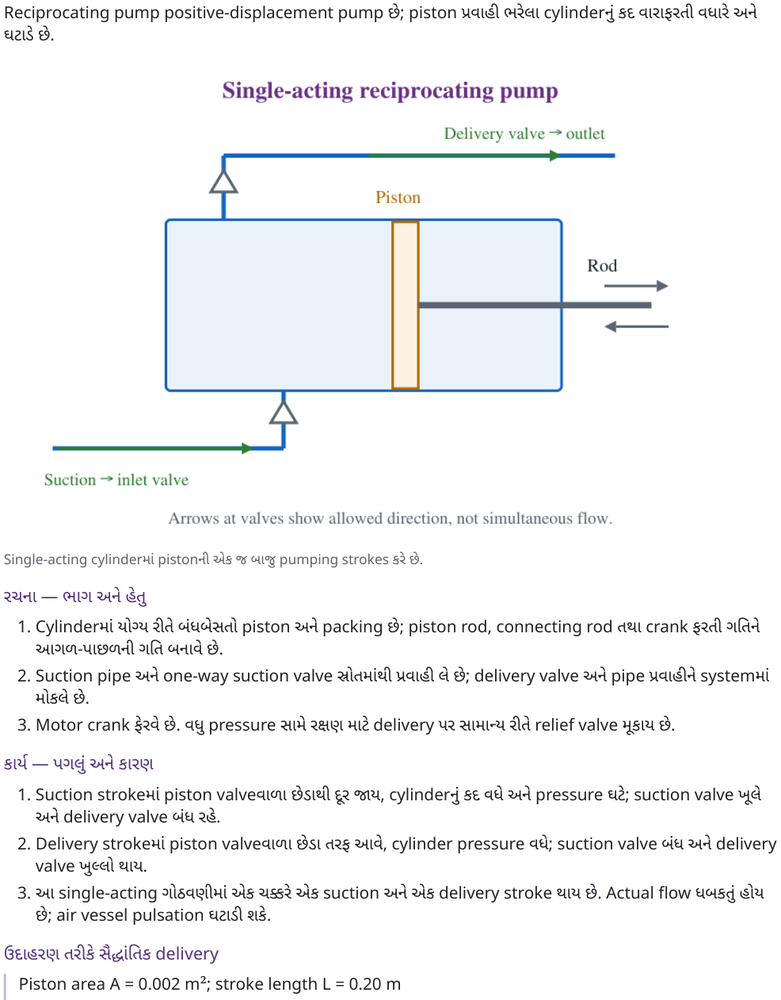
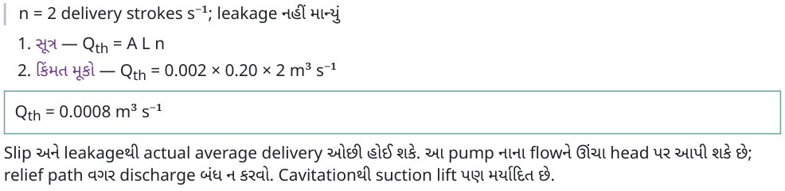
Question 3
Q3 · Fluid behaviour, pumps and measurement
Q.3 (a) · Differentiate Newtonian and non-Newtonian fluid. · 3 marks

pressure.

For example, many paints shear-thin. Viscosity can also change with temperature even in a Newtonian fluid.

Q.3 (b) · Describe Characteristics curves of centrifugal pump. · 4 marks
Centrifugal-pump characteristic curves show how pump performance varies with flow at a specified impeller diameter, speed and liquid condition.
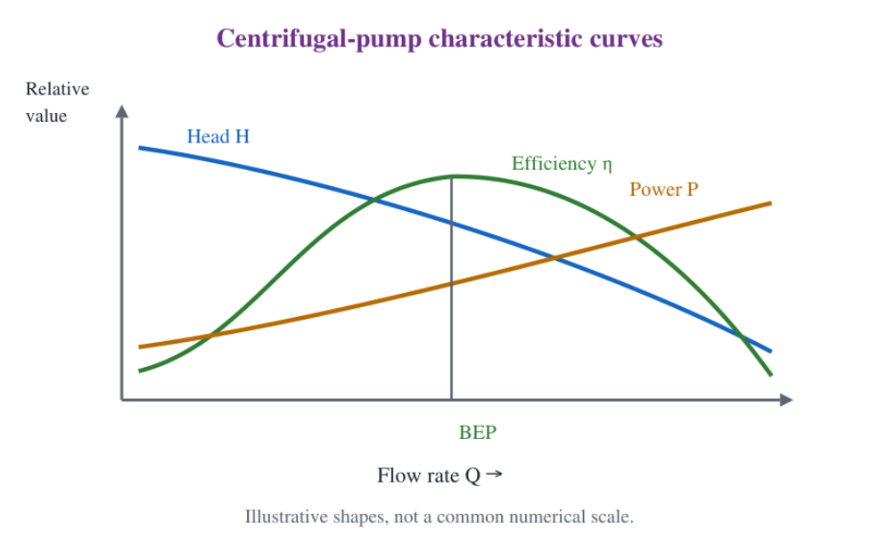
Illustrative head, efficiency and input-power shapes; the axes are schematic and not a common numerical scale.
• Head H commonly falls as flow Q increases; efficiency η rises to the best efficiency point (BEP) and then falls.
• Input power often rises with flow, but its exact shape depends on the pump design. NPSH required is also supplied as a separate curve.
• The operating flow is where the pump head curve intersects the system resistance curve; choose a point near BEP when practical.
Use the manufacturer’s actual curves and units. Speed, impeller diameter and fluid properties change the curves; the sketch alone cannot size a pump.
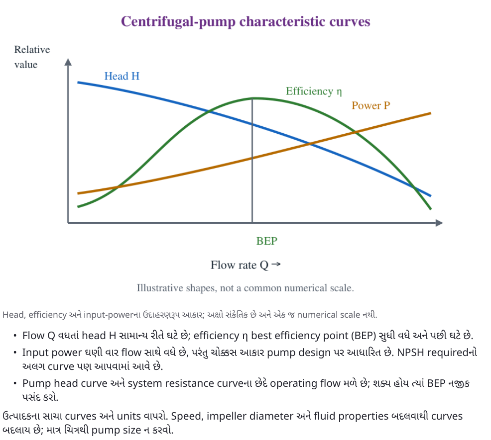
Q.3 (c) · Derive equation of flow rate through Orifice meter. · 7 marks
Orifice meter infers volume flow from the pressure difference created by a restriction.
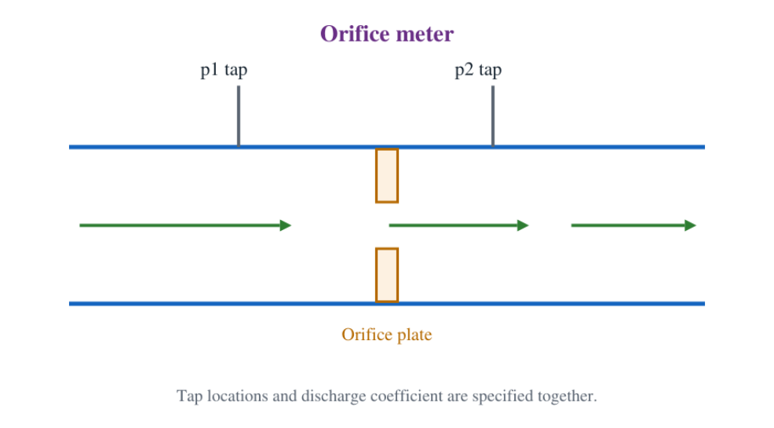
A sharp-edged plate restricts flow; tap positions must match the calibration.
Assumptions and definitions
Steady incompressible single-phase flow in a full horizontal pipe; ρ is constant and p₁ > p₂.
A₁ and D are upstream area and diameter; A₂ and d are throat or orifice area and diameter. V₁ and V₂ are ideal section-mean velocities.

Derivation


5. Ideal volume flow — Qideal = A₂ V₂
6. Calibrate real flow — Q = Cd Qideal
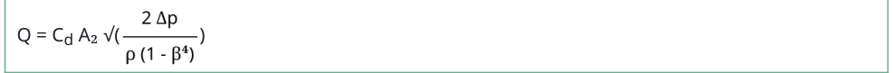
In a real orifice the jet contracts to a vena contracta and loses energy. Cd accounts for these effects and the specified pressure-tap geometry; do not treat it as a universal constant.
Illustrative calculation (not printed data)
A₂ = 0.002 m²; β = 0.50; ρ = 1000 kg m⁻³
Δp = 9375 Pa; illustrative Cd = 0.62
2. Actual volume flow — Q = 0.62 × 0.002 m² × 4.472 m s⁻¹
Q ≈ 0.00555 m³ s⁻¹
The unit is volume per time. Use a measured Cd for the meter and tap arrangement; for unequal elevations use the corrected pressure head. Compressible gases may require an expansion factor.
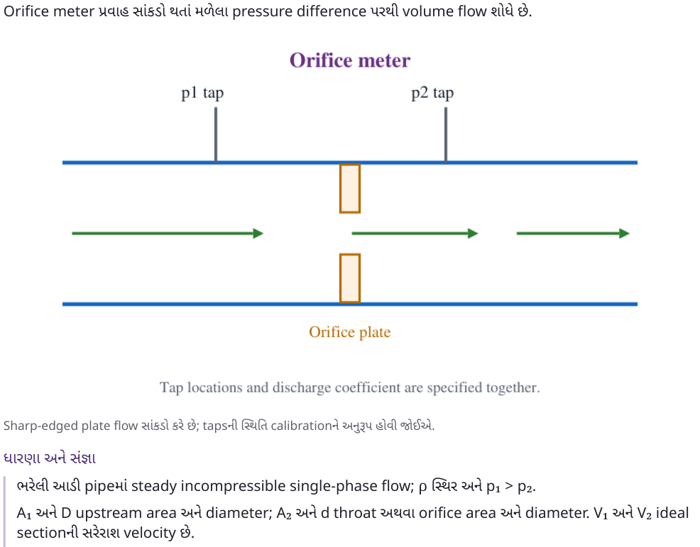

Q.3 (a) · Describe construction of Simple U-tube manometer with neat sketch. · OR · 3 marks
A simple U-tube manometer measures pressure relative to atmosphere by balancing liquid columns.

One limb is connected to the gas and the other is open; the left pressure is higher in this example.
• A transparent U-shaped tube contains an immiscible manometric liquid. One limb connects to the vessel; the other opens to atmosphere. A scale gives the vertical level difference h.
• For negligible gas density, pA − patm = ρmgh. If the pressure is lower than atmospheric, the levels reverse.
Example: a water manometer can indicate a small gas pressure; use a liquid compatible with the gas and a tube range that can contain the levels.
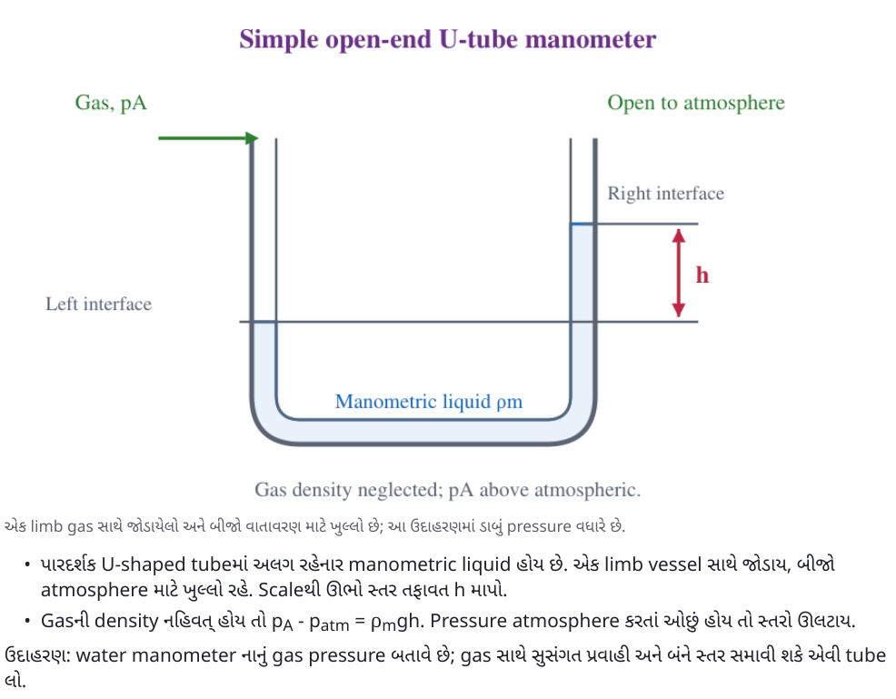
Q.3 (b) · What is Fluidization? List out industrial applications of fluidization. · OR · 4 marks
Fluidization suspends a bed of solid particles in an upward fluid stream so that the bed behaves much like a fluid.
• Fluid catalytic cracking and catalytic reaction with good mixing.
• Drying granules in a fluidized-bed dryer.
• Combustion or gasification of solid fuels.
• Roasting ores, coating particles and controlled heat treatment.
Example: hot air can dry wet pharmaceutical granules. Excessive velocity can entrain particles, so a separator may be necessary.
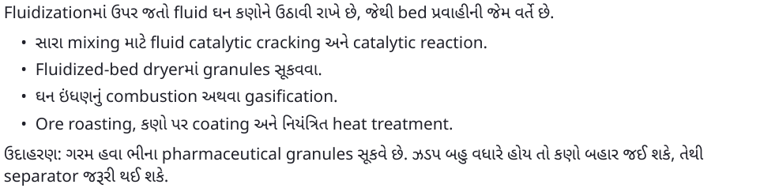
Q.3 (c) · Derive equation of flow rate through Venturi meter. · OR · 7 marks
Venturi meter infers volume flow from the pressure difference created by a restriction.

The upstream and throat taps measure the differential pressure.
Assumptions and definitions
Steady incompressible single-phase flow in a full horizontal pipe; ρ is constant and p₁ > p₂.
A₁ and D are upstream area and diameter; A₂ and d are throat or orifice area and diameter. V₁ and V₂ are ideal section-mean velocities.

Derivation
5. Ideal volume flow — Qideal = A₂ V₂
6. Calibrate real flow — Q = Cd Qideal

The smooth throat guides the stream and the diffuser recovers some pressure; Cd accounts for departures from the ideal model.
Illustrative calculation (not printed data)
A₂ = 0.002 m²; β = 0.50; ρ = 1000 kg m⁻³
Δp = 9375 Pa; illustrative Cd = 0.98

2. Actual volume flow — Q = 0.98 × 0.002 m² × 4.472 m s⁻¹
Q ≈ 0.00877 m³ s⁻¹
The unit is volume per time. Use a measured Cd for the meter and tap arrangement; for unequal elevations use the corrected pressure head. Compressible gases may require an expansion factor.
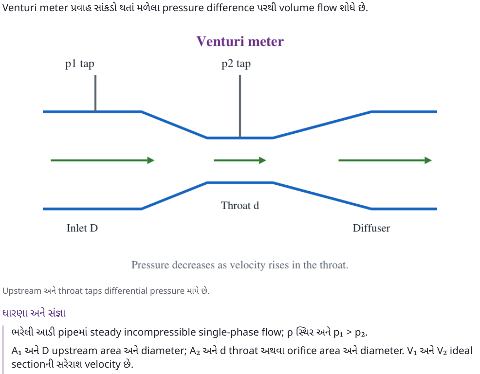
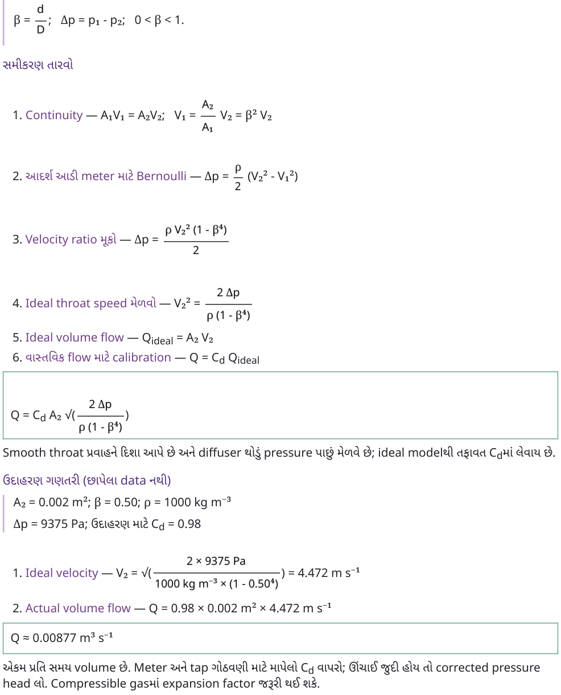
Question 4
Q4 · Pipe roughness, ejectors, valves and boundary layers
Q.4 (a) · Discuss Roughness of pipe. · 3 marks
Pipe roughness ε is a representative height of surface irregularities; D is internal pipe diameter.
• Larger relative roughness usually increases turbulent friction factor and pressure loss.
• For fully developed laminar flow in a round pipe, the ideal Darcy factor is governed by Reynolds number, not roughness.
• Example: corrosion or deposits can make an old steel pipe rougher than a clean smooth tube.
Use an appropriate effective roughness for the actual material and condition; it is an engineering model of the surface.
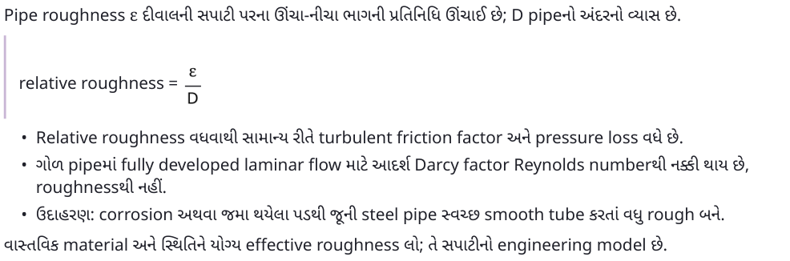
Q.4 (b) · Describe Construction of Steam jet ejector with neat sketch. · 4 marks
A steam-jet ejector uses high-pressure motive steam to entrain another gas and produce suction.
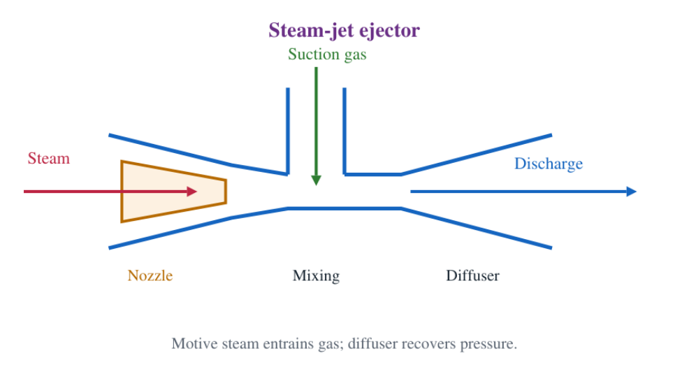
A motive-steam nozzle, suction entry, mixing section and diffuser form the main flow path.
Construction and working
1. A steam nozzle discharges into a suction chamber; downstream are a mixing throat and a diverging diffuser.
2. Steam expands through the nozzle and becomes a high-speed jet, producing low pressure near the suction port.
3. The jet entrains gas; the mixture transfers momentum in the mixing section. The diffuser slows the mixture and recovers pressure toward the discharge.
The ejector has no moving internal parts and is used for vacuum service. Steam consumption can be high; suction depends on motive pressure and discharge backpressure.
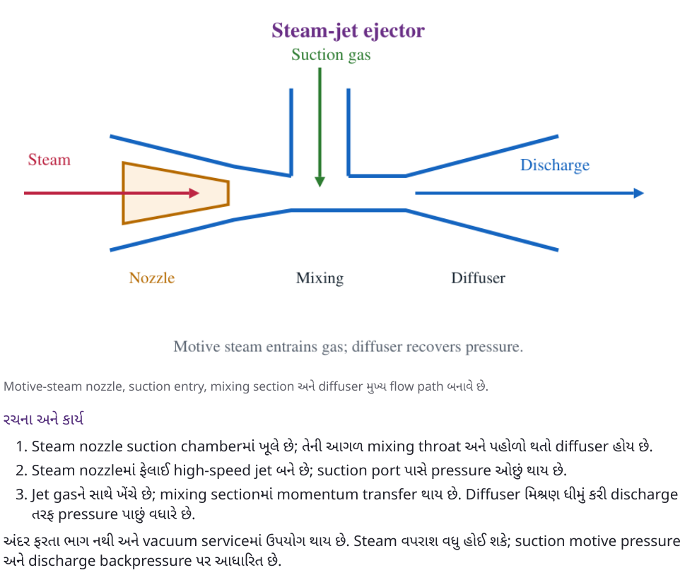
Q.4 (c) · Describe Construction and working of Gate valve. · 7 marks
A gate valve is an isolation valve whose gate moves across the flow passage to open or close it.
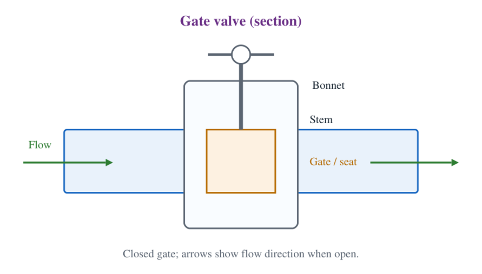
A closed gate is shown; the arrows indicate the flow direction when it is raised.
Construction — part and purpose
1. The body contains a passage and two seating surfaces; the gate or wedge seals against the seats in the closed position.
2. A stem joins the gate to an externally operated handwheel or actuator. The bonnet and packing enclose and seal the stem region.
3. Flanged or threaded ends connect the body to the pipe. The gate is raised clear of the passage when fully open.
Working — step and reason
1. Turning the handwheel moves the stem and gate perpendicular to the flow; lifting the gate opens the passage.
2. When fully open the flow path is nearly straight, giving relatively low pressure loss.
3. Lowering the gate presses it onto the seats to isolate the line. Partly open operation can cause vibration, erosion and poor control.
Example: close an upstream isolation valve before maintaining a pump, following the site isolation procedure. Use the specified valve direction and pressure rating; a closed valve does not by itself replace a complete safety isolation plan.
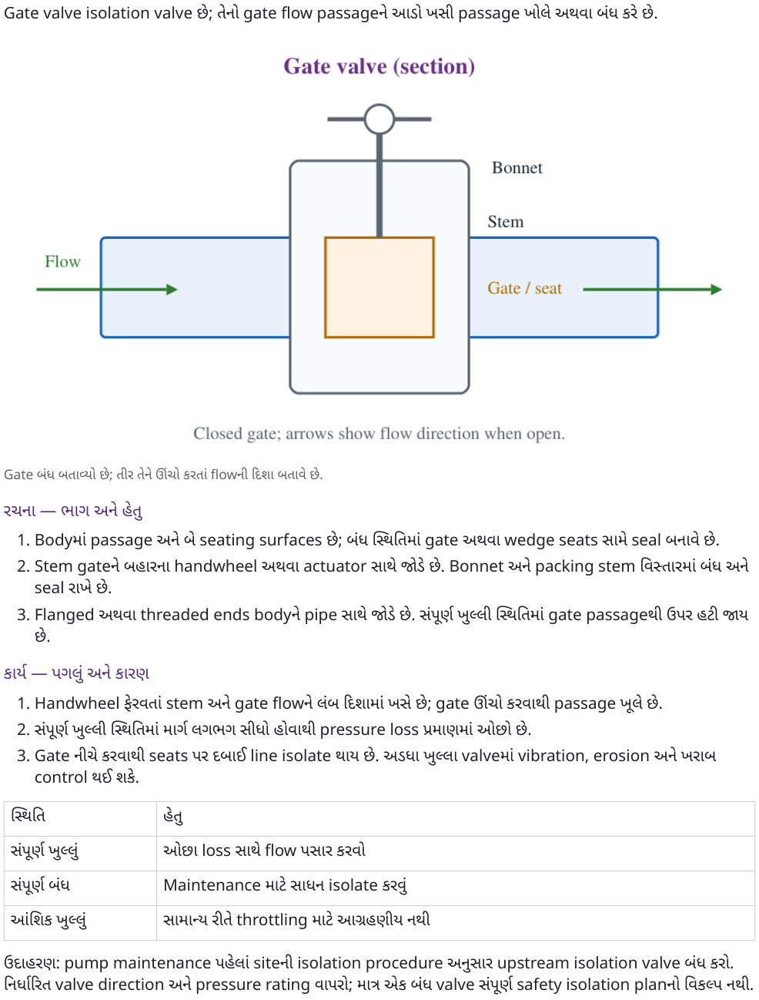
Q.4 (a) · Define Velocity field and velocity gradient. · OR · 3 marks
A velocity field assigns a velocity vector to each position and time: V = V(x, y, z, t).
how streamwise velocity u changes normal to the layers.
• Its unit is s⁻¹; for u = (2 s⁻¹)y, the gradient is 2 s⁻¹.
• In Newtonian simple shear, shear stress is μ times this gradient. A general three-dimensional field has several gradient components.
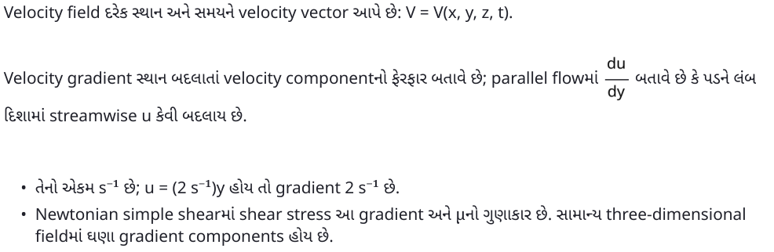
Q.4 (b) · Describe Friction losses from Sudden expansion of cross section. · OR · 4 marks
A sudden expansion produces irreversible loss when a fast jet enters a larger pipe and mixes with separated, recirculating liquid.

V₂ is smaller because the downstream area is larger.
Assume steady incompressible flow, approximately uniform mean velocities and negligible wall loss over the short expansion.
A₁V₁ = A₂V₂; A₂ > A₁; V₁ > V₂
Applying a momentum balance to the expanding control volume and an energy balance gives the Borda–Carnot expansion head loss:
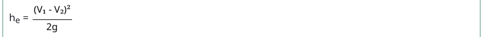
The head is non-negative and measured in metres of fluid. Static pressure can rise downstream as velocity falls, even while total mechanical head is lost.
Illustration
V₁ = 2 m s⁻¹; V₂ = 1 m s⁻¹; g = 9.81 m s⁻²
he ≈ 0.0510 m
Gradual diffusers generally reduce this separation loss. The ideal equation assumes a sudden enlargement; it is not the full pipe friction loss.
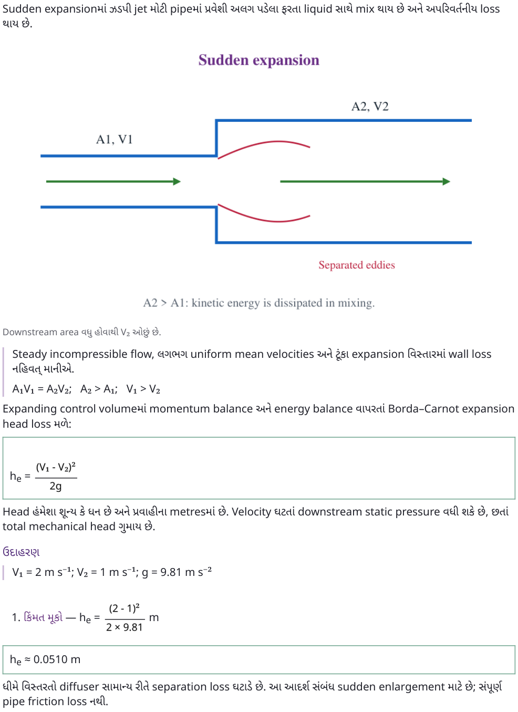
Q.4 (c) · Discuss Boundary layer & it’s formation in straight tubes. · OR · 7 marks
A boundary layer is the region near a solid wall in which viscosity causes a substantial velocity change from the no-slip wall to the outer flow.

Entrance-region layers grow from both walls and ultimately merge.
Formation in a straight tube
1. Liquid enters a straight tube; at a stationary wall its velocity is zero because of no slip.
2. Viscous action slows neighbouring layers. The affected boundary layer grows along the entrance length while a faster central core remains.
3. Layers from opposite walls meet; farther downstream the velocity profile no longer changes with axial position: the flow is fully developed.
A fully developed laminar Newtonian profile is parabolic, not uniform. At higher Reynolds number the layer and developed flow can be turbulent.
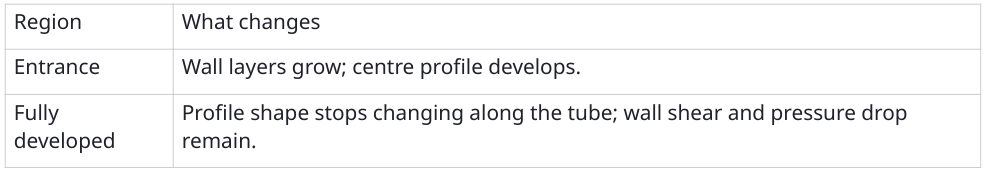
Illustrative laminar entrance length
For a simple laminar estimate: Le ≈ 0.05 Re D
Re = 1000; D = 0.020 m
1. Substitute — Le ≈ 0.05 × 1000 × 0.020 m
Le ≈ 1.0 m
This estimate depends on inlet conditions and is not a universal transition criterion. Boundary layers and wall shear explain pipe friction; entrance effects matter in short pipes.
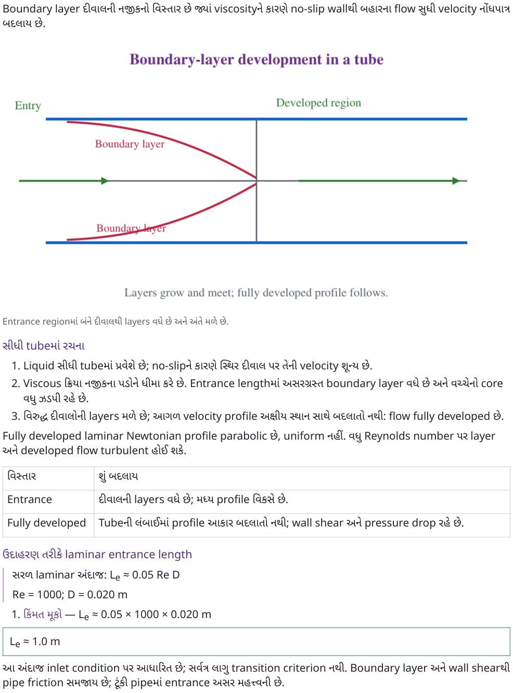
Question 5
Q5 · Flowmeters, pipe flow and valves
Q.5 (a) · Describe working of Magnetic flow meter. · 3 marks
An electromagnetic flowmeter uses Faraday’s law: a conducting fluid moving across a magnetic field induces a voltage between electrodes.

Flow, magnetic field and electrode direction are mutually perpendicular; dots denote field out of the page.
E = k B D V
Q = A V
• A magnetic field B crosses a full, electrically lined pipe. Electrodes separated by distance D sense voltage E; the transmitter converts calibrated mean velocity V to volume flow Q.
• k depends on geometry and calibration. With the field fixed, voltage is proportional to velocity. Example: wastewater or a conductive chemical solution.
The fluid must have sufficient electrical conductivity and the pipe must remain full. Nonconductive oil or gas is unsuitable; coated electrodes can cause error.

Q.5 (b) · Explain Hagen-Poiseuille’s Equation. · 4 marks
Hagen–Poiseuille equation gives the viscous pressure drop or volume flow for fully developed laminar flow in a circular tube.
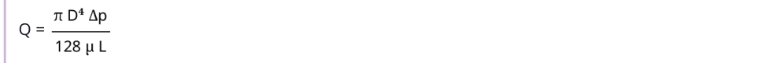
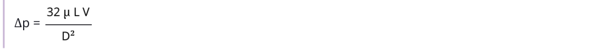
• D and L are tube diameter and length, μ dynamic viscosity, V average velocity and Δp the pressure drop over a horizontal length.
• Assume steady incompressible Newtonian liquid, constant properties, no slip and a long straight circular pipe; the velocity profile is parabolic.
• For fixed D and L, doubling Q doubles Δp. A much smaller diameter sharply increases resistance because flow at fixed Δp varies with D⁴.
Do not apply the laminar relation to turbulent or entrance-region flow. For an inclined pipe use the appropriate pressure plus elevation driving head.
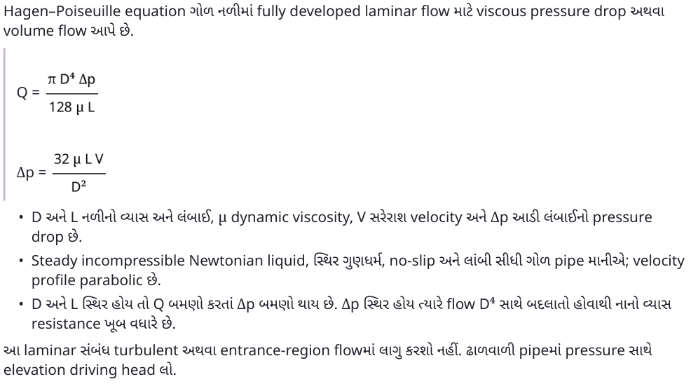
Q.5 (c) · Derive equation of pressure difference for U-tube manometer. · 7 marks
A differential U-tube manometer compares pressure at two points by balancing a heavier manometric liquid against the pipe liquid.
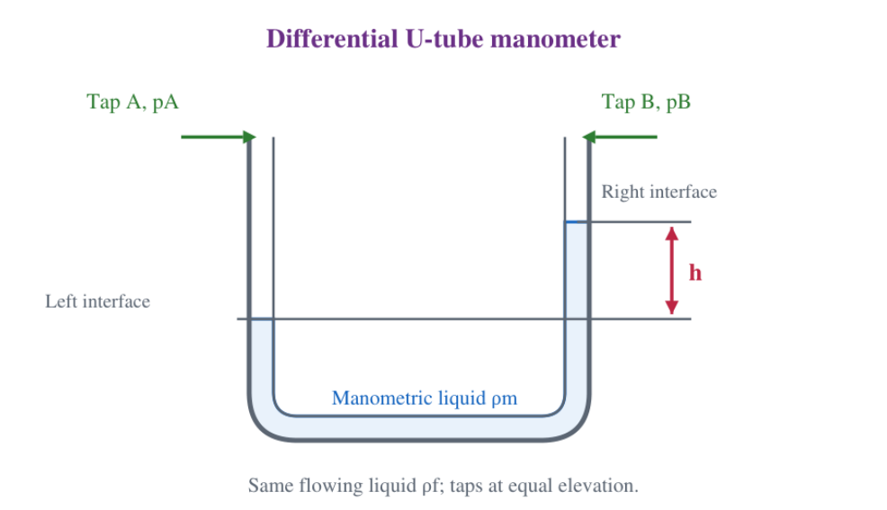
Both taps are at equal elevation; the higher pressure at A depresses the left interface.
Assumptions and notation
The same static connecting fluid, density ρf, fills both limbs above an immiscible manometric fluid of density ρm > ρf.
Taps A and B are level; right interface is x below the taps and left interface is x + h below them. h is positive for pA > pB.
No capillary effect; pressure is the static pressure at each tap.
Derivation from hydrostatic balance
1. Pressure at left interface — pL = pA + ρfg(x + h)
2. Pressure at right interface — pR = pB + ρfgx
3. Descend h through manometric liquid — pL = pR + ρmgh
4. Substitute — pA + ρfg(x + h) = pB + ρfgx + ρmgh
5. Cancel the equal terms — pA − pB = ρmgh − ρfgh
pA − pB = (ρm − ρf) g h
Illustrative pressure difference
ρm = 13,600 kg m⁻³; ρf = 1000 kg m⁻³
h = 0.10 m; g = 9.81 m s⁻²
1. Substitute — pA − pB = (13,600 − 1000) × 9.81 × 0.10 Pa
pA − pB = 12,360.6 Pa ≈ 12.36 kPa
The result is positive for the levels shown. If taps are at different elevations, add the appropriate hydrostatic elevation term. For an open-end gas manometer, negligible gas density gives pA − patm = ρmgh.
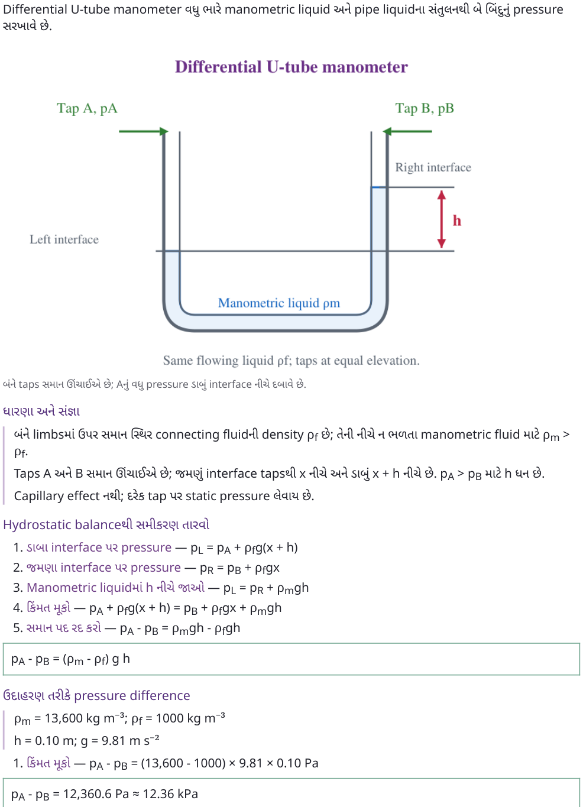
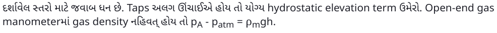
Q.5 (a) · Describe working of butterfly valve. · OR · 3 marks
A butterfly valve uses a disc rotating about a shaft across a pipe to control or isolate flow.
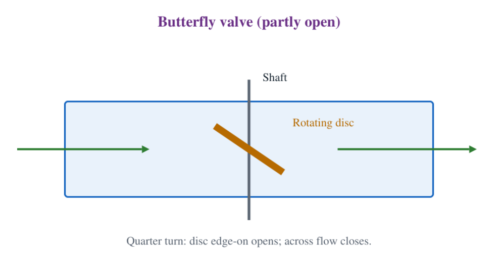
The disc is shown partly open; the shaft turns through about a quarter turn between open and closed.
• Turn the disc roughly 90°: edge-on to the stream is open; across the stream it contacts the seat and closes.
• It is compact and common on large water or air lines. A partly open disc can throttle within the valve’s specified range.
The disc remains in the flow even when open and introduces some loss; seat material and pressure– temperature limits matter.
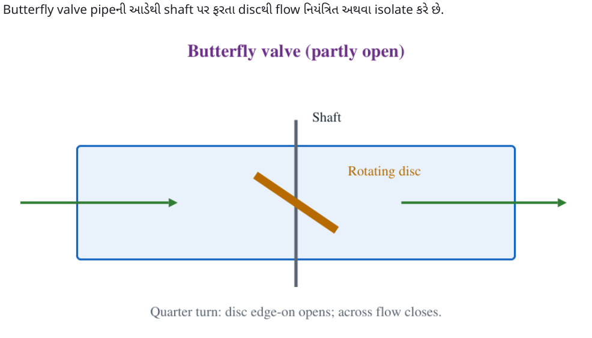
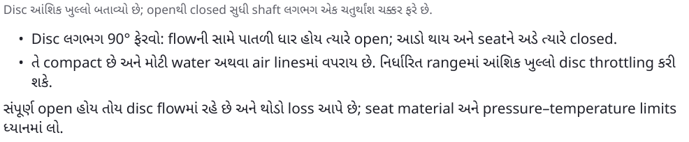
Q.5 (b) · Define Fan and Blowers. · OR · 4 marks
A fan or blower is a machine that moves gas by transferring energy from a rotating element.
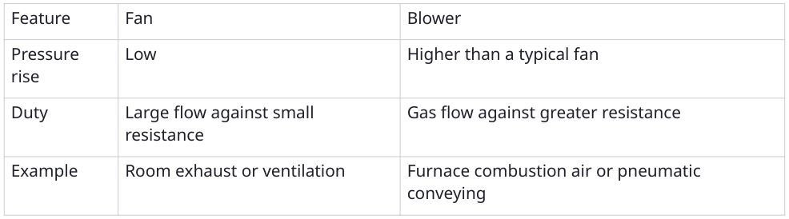
Both may use centrifugal or positive-displacement designs. Select from the manufacturer’s flow– pressure curve; naming thresholds differ and an undersized unit cannot overcome the system resistance.
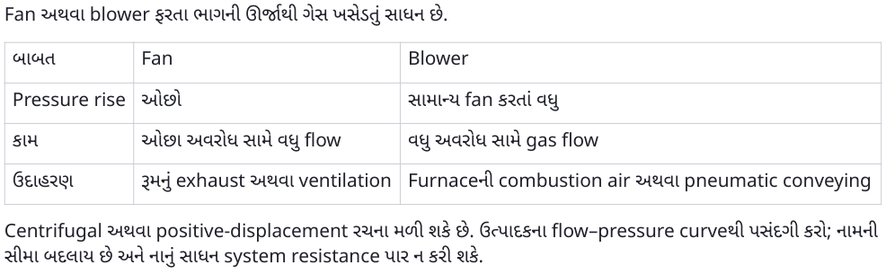
Q.5 (c) · Describe Construction and working of Globe valve with neat sketch. · OR · 7 marks
A globe valve controls flow by moving a plug toward or away from a seat in the flow path.
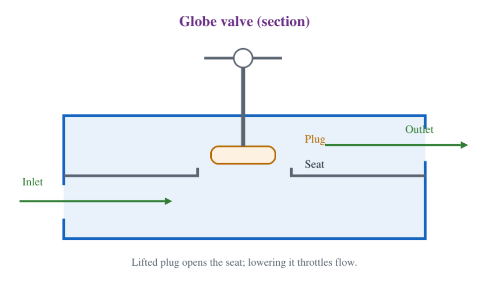
Sectional schematic with plug, seat, stem and a changing flow direction.
Construction — part and purpose
1. A pressure-containing body has inlet and outlet passages arranged around an internal seat.
2. A disc or plug mates with the seat. The stem connects the plug to a handwheel or actuator.
3. The bonnet and packing seal the stem. A screwed stem mechanism moves the plug as the handwheel turns.
Working — step and reason
1. Turning the handwheel lifts the plug from the seat; the opening lets liquid or gas pass through the curved passage.
2. Changing plug position changes the opening area and resistance, so flow can be throttled and controlled.
3. Turning the other way lowers the plug onto the seat to shut off flow. Follow the marked flow direction for the actual valve.
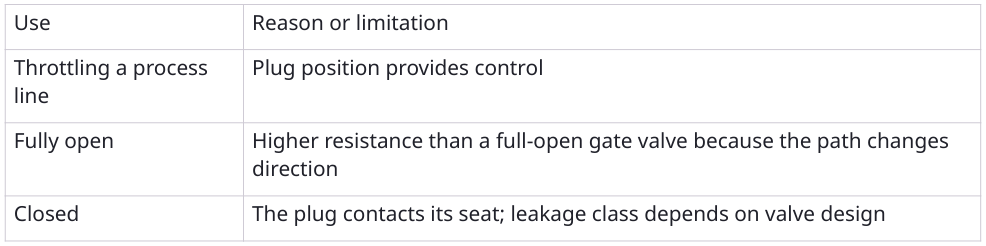
Example: adjust a cooling-water line while monitoring the required flow. Select pressure and temperature ratings and avoid severe cavitation or erosion during throttling.
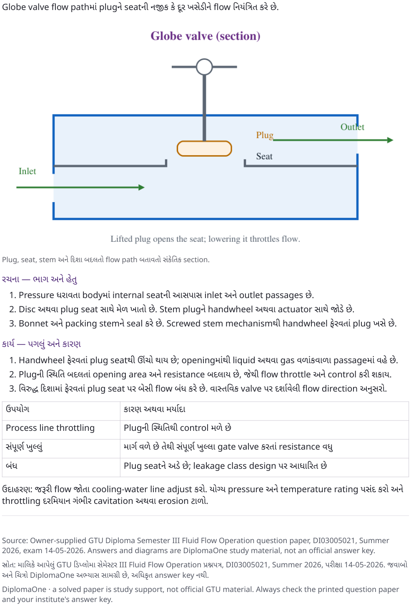